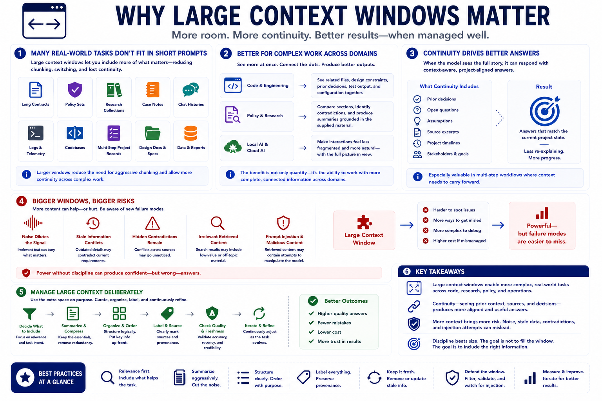

Why Large Context Windows Matter
Connecting to LMS... Progress: in progress

Narration
Large context windows matter because many useful tasks do not fit neatly into short prompts. Long contracts, policy sets, research collections, case notes, chat histories, logs, codebases, and multi-step project records may all require more material than older workflows could include directly. Larger windows reduce the need for aggressive chunking and allow more continuity across complex work.
In code and engineering workflows, large context can help a model see related files, design constraints, prior decisions, and test output in one request. In policy or research work, it can let the model compare sections, identify contradictions, and produce summaries grounded in the supplied material. In local AI and cloud AI use cases alike, larger windows can make the interaction feel less fragmented.
The benefit is not only quantity. Continuity matters. When a model can see prior decisions, open questions, assumptions, and source excerpts, it can produce answers that better match the current project state. This is especially useful in multi-step workflows where the user wants the model to carry forward context without re-explaining everything from scratch.
Large context also introduces new risks. Noise can dilute the signal. Stale information can conflict with current requirements. Hidden contradictions can remain unresolved. Retrieved content may include irrelevant text or prompt injection attempts. A larger window is powerful, but it can make failure modes harder to notice. Managing large context means using the extra space deliberately.